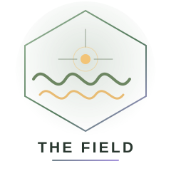
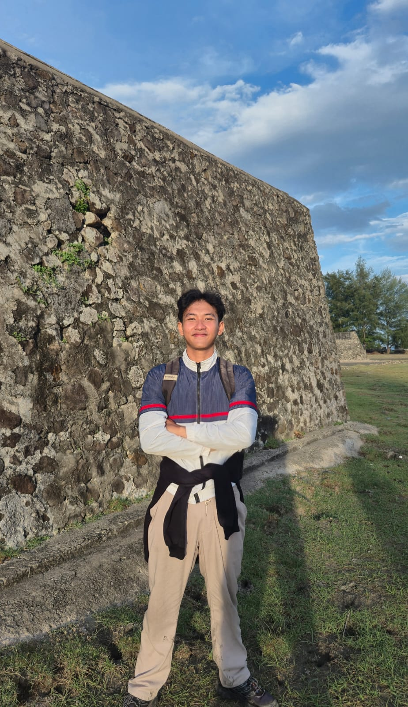
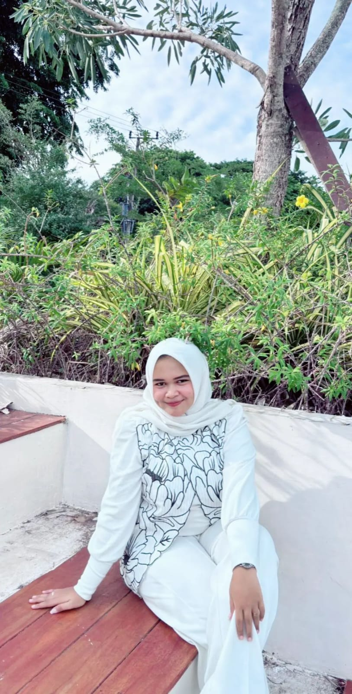
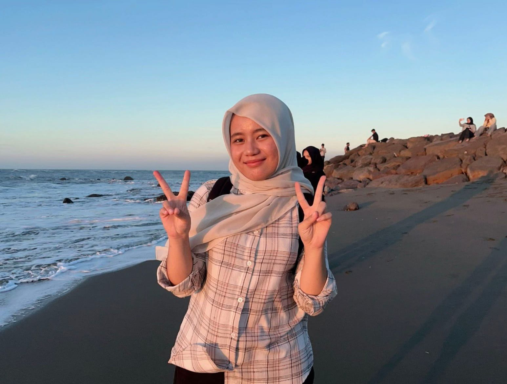

A / INPUT
TXTData mentah
Daftar posisi geofon pada lintasan pengukuran. Nilai jarak ini menjadi masukan posisi penerima dalam perhitungan waktu tempuh.
20 POSISI PENERIMA · SATUAN METER

Dari pengukuran lapangan, pemrograman Fortran, hingga hasil pengolahan. Tiga metode geofisika dalam satu alur interpretasi.
Member Of The Field



Setiap metode memanfaatkan sifat fisika yang berbeda untuk memperoleh informasi bawah permukaan. Alur pembahasannya dibuat konsisten: memahami konsep, melihat data masukan, menelusuri program, lalu membaca hasil.
Waktu tempuh gelombang dan peran geofon sebagai penerima getaran.
BUKA MATERI ↗Respons kelistrikan bawah permukaan dan pemeriksaan kualitas data.
BUKA MATERI ↗Pemodelan anomali medan magnet akibat sumber dipol.
BUKA MATERI ↗Mengenali lapisan bawah permukaan melalui perbedaan waktu tiba gelombang seismik.
Metode seismik refraksi memanfaatkan perambatan gelombang elastik di dalam bumi. Saat sumber getaran menghasilkan gelombang, energi merambat melalui lapisan tanah dan batuan dengan kecepatan yang dipengaruhi sifat material. Pada kondisi lapisan bawah memiliki kecepatan lebih tinggi, sebagian energi dapat dibiaskan sepanjang bidang batas dan kembali terdeteksi di permukaan.
Dalam survei ini, geofon berperan sebagai sensor penerima getaran tanah. Geofon ditempatkan pada sejumlah posisi sepanjang lintasan, kemudian waktu kedatangan gelombang dicatat. Perbandingan waktu tempuh gelombang langsung dan gelombang refraksi membantu menentukan gelombang yang tiba lebih dahulu pada setiap jarak.
Daftar posisi geofon pada lintasan pengukuran. Nilai jarak ini menjadi masukan posisi penerima dalam perhitungan waktu tempuh.
Kode menghitung waktu tempuh gelombang langsung dan refraksi, memilih waktu tiba paling awal, lalu memberi label jenis gelombang.
Hasil perhitungan menunjukkan perubahan waktu tempuh terhadap jarak geofon serta jenis gelombang yang menjadi first arrival.
Mengestimasi variasi tahanan jenis material bawah permukaan melalui pengukuran arus dan beda potensial.
Metode resistivitas mengukur respons kelistrikan bawah permukaan dengan menginjeksikan arus melalui elektroda arus dan mengukur beda potensial melalui elektroda potensial. Besarnya respons tersebut digunakan untuk menghitung resistivitas semu (apparent resistivity), yang dipengaruhi oleh jenis material, kandungan fluida, porositas, dan kondisi geologi.
Pada konfigurasi Schlumberger, dua elektroda arus (A dan B) ditempatkan lebih jauh di bagian luar, sedangkan dua elektroda potensial (M dan N) berada di bagian dalam. Jarak elektroda diubah secara bertahap untuk memperoleh informasi dari volume bawah permukaan yang berbeda. Data kemudian diolah menggunakan faktor geometri (K), nilai resistivitas, dan pemeriksaan selisih pengukuran.
Data berisi jarak AB dan MN serta dua set pasangan nilai tegangan dan arus yang digunakan dalam perhitungan.
Program menghitung faktor geometri, dua nilai resistivitas, rata-rata, error relatif, dan kategori kualitas setiap pengukuran.
Dua hasil resistivitas dibandingkan. Nilai error relatif digunakan untuk menilai konsistensi dan menentukan apakah data dapat diterima.
Mengamati variasi medan magnet untuk mengenali respons dan kemungkinan keberadaan sumber magnetik.
Metode magnetik merupakan metode geofisika pasif yang memanfaatkan variasi medan magnet bumi akibat perbedaan sifat kemagnetan batuan atau keberadaan benda/sumber bermagnet. Pengukuran dilakukan sepanjang lintasan untuk melihat perubahan komponen medan magnet terhadap posisi.
Pada latihan pemodelan ini, program menggunakan model sumber dipol magnetik dengan parameter momen dipol dan kedalaman. Komponen anomali vertikal (Bz) dihitung pada setiap titik lintasan. Nilai anomali kemudian dikelompokkan menjadi positif atau negatif, sedangkan gradien digunakan untuk menandai perubahan medan yang relatif tajam. Hasil ini merupakan pemodelan teoritis, bukan klaim pengukuran lapangan langsung.
Daftar posisi koordinat x pada lintasan magnetik. Posisi ini menjadi titik evaluasi nilai anomali medan magnet.
Kode menghitung anomali Bz model dipol, mengklasifikasikan nilai, menghitung gradien, dan menyusun ringkasan statistik.
Output menampilkan anomali magnetik vertikal (Bz), kategori anomali, gradien, dan ringkasan statistik sepanjang lintasan.
Masuk ke dalam simulasi bawah permukaan bumi. Pelajari rambatan gelombang, aliran arus listrik, dan anomali medan magnet melalui lingkungan 3D interaktif.
Amati bagaimana gelombang seismik merambat melalui dua lapisan bumi dengan kecepatan berbeda.
Tekan start untuk melihat rambatan gelombang. Gunakan mouse untuk mengubah sudut pandang.
Catatan: simulasi 3D merupakan visualisasi edukatif. Model digunakan untuk memahami prinsip fisika setiap metode, bukan sebagai pengganti pengolahan data lapangan.
Ketiga metode memperlihatkan bahwa data geofisika tidak berhenti pada proses pengukuran. Data perlu disusun, dihitung, diperiksa kualitasnya, dan dipahami berdasarkan prinsip fisika yang digunakan.
Seismik refraksi menekankan waktu tempuh gelombang, resistivitas mengolah respons kelistrikan, sedangkan metode magnetik mempelajari variasi medan magnet. Pemrograman membantu proses perhitungan menjadi lebih sistematis, konsisten, dan mudah ditelusuri.
KEMBALI KE ATAS ↑